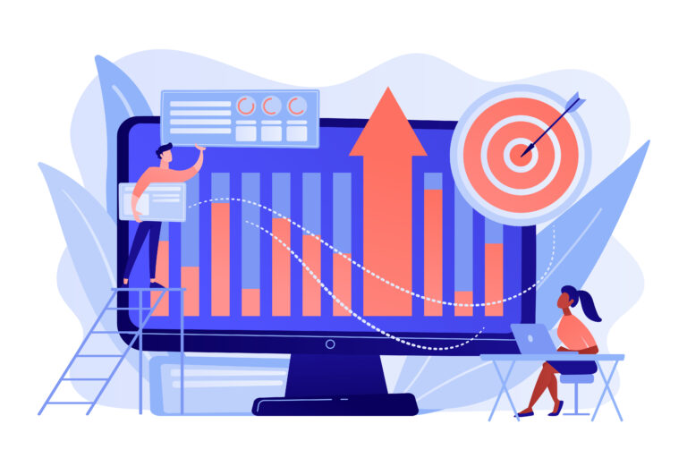

What is Zelecloud?
Zelecloud is a learning and connection service that aims to help undergrad students learn new coding skills, DevOps, and connect with employers for jobs
What we offer
- Resume builders
- Coding interview practice problems
- Abundance of programming languages
- Help with finding local jobs in your area
- Upcoming career fairs to get you infront of campus leaders
- Lessons on subjects that students typically struggle with in school
We hope to create a platform geared toward undergraduate students who are looking for full time employement upon graduating from a four year program. While your on our page, connect with alumni who have gone through the same thing you are now. They have high levels of expertise when it comes the journey of it all, and a number of these individuals will likely be able to provide more details about what the software engineering position in itself. Not to mention, the sections we have that help students learn more about topics that prove to be difficult to learn in a classroom setting. Learn about all these features and more as you spend time on our website! Enjoy!
